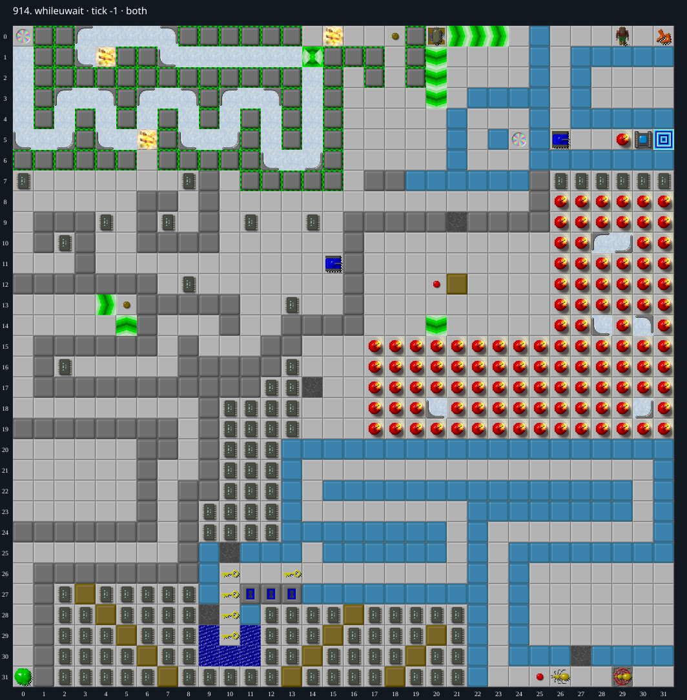

Jacques · Original Tile World MS
914. whileuwait
Impossibility argumentPermanent walls and unconnected traps limit every potentially winning route to at most 36 chips, below the 131 required by the exit socket.
131 chips required · No time limit
Why completion is impossible
- There are no green buttons in either DAT plane, so all 68 closed toggle walls remain closed. Ordinary Walls and real blue walls are also permanent.
- The level has 92 unconnected bear-trap cells: 90 lie beneath bombs and two beneath real blue walls. The only wired trap targets are (20,0) and (26,5); neither belongs to this barrier.
- Before a bomb over a trap is cleared, entering it kills Chip. A block or monster can clear the bomb, but the lower trap survives. Entering the resulting Empty-over-Trap promotes the trap under Chip. Native movement rejects every departure from an unreleased trap; no controller can release these traps, and release state is cleared at the start of each move. The cloner therefore cannot turn this trap barrier into a traversable path.
- For an upper bound, grant Chip unrestricted passage through every other tile, ignore all monsters, doors, blocks, water, fire, sockets, force/ice directions and thin-wall restrictions, and link both teleports in both directions. Block only permanent walls, real blue walls, closed toggles, and the 92 unconnected traps. This permissive graph has a 310-cell start component containing exactly 36 chips across both original DAT planes. The other 106 chips lie outside it. The complete cell sets are recorded in 914-cut.json.
- The sole exit (31,5) has a socket at its only possible entry, (30,5); its north and south neighbors are real blue walls and its east side is the board boundary. At most 36 chips can be collected on any play that can still reach an exit, whereas 131 are required. Therefore the socket cannot open.
Inspect both layers
The main map shows the initial runtime state. Switch to the buried layer to inspect hidden terrain and items. Hover coordinates are also available in the downloadable SVG.


Recorded checks and attempts
- constructive prefix: Collected all ten upper-maze chips, reached button (20,12), and cloned a block at (21,13). The cloner is accessible through Gravel (21,9).
- native trap probe: Moved a cloned block into Bomb-over-Trap (19,15), entered the resulting trap, then attempted all four directions. Both native and TypeScript traces remain on (19,15), playing but permanently trapped, through tick 791. Full trace parity is exact; this probe illustrates the source-level invariant, rather than proving impossibility by failed search.
- independent proof review: Recomputed the 310-cell permissive component and its 36-chip upper bound. Inspected the exact barrier diagram, original C trap-release and movement rules, bomb removal, and the sole exit socket. The graph grants all other movement, including unrestricted teleport links, so the bound applies to every potentially winning route.
Evidence
- Structured report
- 914-cut.json
- 914-cut.png
- 914-cut.svg
- 914-trap-probe.json
- 914-trap-probe.svg
- 914-trap-probe.tws
- legacy_c/mslogic.c:519-529 (unconnected traps are closed)
- legacy_c/mslogic.c:1026-1029 (closed trap forbids departure)
- legacy_c/mslogic.c:1585 (release state cleared when moving)
- legacy_c/mslogic.c:1616-1623 (Empty arrival promotes lower tile)
- legacy_c/mslogic.c:1698-1702 (block destroys Bomb, preserves lower plane)
- legacy_c/mslogic.c:1812-1821 (trap arrival release requires a connection)
- legacy_c/mslogic.c:1034-1042 (socket checks remaining chips)
- legacy_c/mslogic.c:1829 (exit completion)